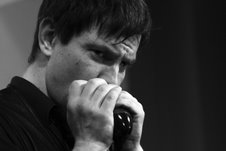

BIG
BLUES REVIVAL собралась в феврале 1999.
Объединяет музыкантов самобытных, тонко
чувствующих настроение музыки и имеющих
большую музыкальную практику.
BIG
BLUES REVIVAL собралась в феврале 1999.
Объединяет музыкантов самобытных, тонко
чувствующих настроение музыки и имеющих
большую музыкальную практику.BIG
BLUES REVIVAL собралась в феврале 1999.
Объединяет музыкантов самобытных, тонко
чувствующих настроение музыки и имеющих
большую музыкальную практику.
Изначально B.B.R. исповал акустическое слышание и звучание музыки. Наше кредо - исполнение классических композиций BLUES, FUNK, SOUL сквозь свое видение этого мира, пестрого и многоцветного.
Группа B.B.R. впервые выступила в баре гостиницы "Карелия", оставив неизгладимый след в сердцах завсегдатаев этого заведения и вызвав множество различных дружественных жестов со стороны оных. B.B.R.- это BIG BLUES REVIVAL в полном смысле этого слова. B.B.R. занимается возрождением и развитием блюз-традиций в Санкт-Петербурге и во всем мире. Входя в XXI век, который будет веком блюза, B.B.R. выступают за мир во всем мире, в защиту прав человека и за специальные и обширные привилегии для блюзменов, как например бесплатная заправка на лучших бензоколонках и бесплатная стоянка на лучших автостоянках. В конце можно прибавить пару строк о том, что музыканты B.B.R. очень любят blues и каждый день в принципе им и занимаются - при всем этом рассчитывая на благосклонную реакцию публики, обильные вливания со стороны толстых кошельков, но в первую очередь на Господа нашего Иисуса Христа.
Первоначальный состав группы выглядел следующим образом:
Однако после ухода из группы Сергея Стародубцева, звучание группы перестает тяготеть к акустике. В группе полностью меняется состав инструменталистов. Новый по сути коллектив по прежнему возглавляет лидер, идеолог и вокалист Виталий Андреев.
Пресс-релиз группы на начало 2008 года:
BIG BLUES REVIVAL занимается возрождением и развитием блюз-традиций в Санкт-Петербурге (Россия) и во всем мире. Войдя в XXI век, который является веком блюза, B.B.R. выступают за мир во всем мире, в защиту прав человека и за специальные и обширные привилегии для блюзменов, как, например, бесплатная заправка на лучших бензоколонках и бесплатная парковка на лучших автостоянках…
Блюз - не музыкальное направление, а состояние души.
Группа собралась в феврале 1999. Объединяет музыкантов самобытных, тонко чувствующих настроение музыки и имеющих большую музыкальную практику.
За девять лет существования группы, музыканты исполнили более трехсот композиций, как в оригинальных, так и в собственных версиях и выпустили четыре концертных альбома:
В виду острой необходимости русского народа в культурном развитии и росте, еще в 2000-м году родилась идея студийного проекта с песнями из репертуара Аркадия Северного - как возможно достойная альтернатива массе охрипших голосов и электронных самоиграев.
В марте 2004 года вышел альбом "Северный Блюз" с одиннадцатью песнями на русском языке.
В июне 2005, отдавая дань уважения и пропагандируя отечественную блюзовую традицию, вышел второй студийный альбом "Мир от Майка" с песнями Майка Науменко и группы "Зоопарк".
Виталий Андреев - вокал, акустическая гитара, бубен, шейкер
Лидер и основатель группы Big Blues Revival.
Более чем за 20 лет музыкальной карьеры сотрудничал и выступал
с группами: Андеграунд, Пограничное Состояние, ТОПС, Stupid Show, Ляпин Бэнд,
Big Blues Revival.
Принимал участие в выступлениях Артура Брауна (США), Жана-Люка Понти (Франция).
Кирилл Михайлов - гитара, акустическая гитара.
В 2000 году начал свою музыкальную карьеру с участия в джазовом проекте
Make or Break. Выступал во многих музыкальных проектах Санкт-Петербурга.
Играет в группах: Barrel-House, Blues Clan, Big Blues Revival.

Алексей Иванов - харп.Владимир Коновалов - бас.
Свою творческую карьеру начал в 1985 году выступлениями с Заслуженным артистом Якутской республики Юрием Платоновым.
Принимал участие в проектах: Belinov Blues Band, Дмитрий Ревякин и "Соратники", Рабочий Район (Москва), Ляпин Blues Band, Оле Лукойе.
Преподаватель гитары, бас гитары, контрабаса.
Игорь Лёвкин - барабаны.
Сотрудничал с Военным оркестром Даугавпилского ВВАИУ, гр. "Третий Рим" (Дядя Миша Чернов ДДТ), гр. "Neo Folk" (Finland), гр. "Пасхальное шествие" (Шнур, Л.Федоров (Аукцыон)).
Принимал участие в фестивалях "Крылья" и "Окна открой".
фотографии Сергея Ушакова
Официальный сайт группы с подробной информацией.
Bring It On Home (3 005k) (S.B.Williamson II)
I Can't Be Satisfied (2 840k) (M.Morganfield)
Louisiana Blues (718k) (M.Morganfield)